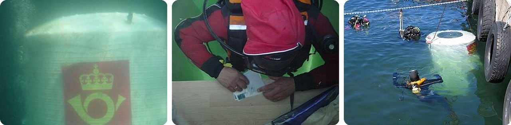
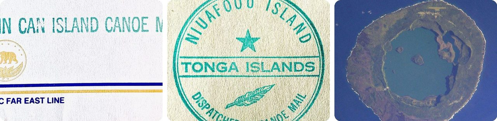
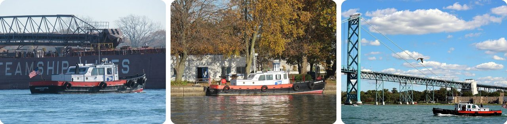

🌍 톱 10 이상한 우체통과 우편
2026년 11월 16일
1. 🇳🇴 노르웨이에는 바닷속에 우체국이 있어요

노르웨이 남쪽 바닷가의 작은 마을 리쇠르에서, 지역 스쿠버다이빙 동호회가 2004년 6월 4일에 물속 4미터에 우체국을 열었어요. 큰 수영장의 가장 깊은 쪽과 비슷한 깊이예요.이 우체국은 공기를 가득 채운 유리섬유 잠수종이라서, 안은 물에 젖지 않아요. 코끼리 한 마리만큼 무거운 5톤짜리 추가 바닥에 붙잡아 둬요.
엽서는 이렇게 도착해요. 부두에 있는 우체통에 넣어요 → 일주일에 몇 번, 잠수하는 우체국장이 방수 가방에 우편물을 넣고 내려가요 → 공기 방울 안에서 도장을 찍어요 → 다시 물 위로 올라와 보통 우편으로 보내져요.
물갈퀴를 신어야 비울 수 있는 우체통인 셈이에요.
2. 🇫🇷 파리는 118년 동안 길 밑의 공기 관으로 편지를 보냈어요
 1866년부터 1984년까지 파리에는 기송 우편이 있었어요. 편지를 작은 통에 넣으면 공기가 그 통을 금속 관 속으로 밀어 보냈어요. 관은 도시의 하수도를 따라 깔려 있어서, 새로 땅을 팔 필요도 없었고 위쪽 도로의 교통 체증도 피할 수 있었어요.
1866년부터 1984년까지 파리에는 기송 우편이 있었어요. 편지를 작은 통에 넣으면 공기가 그 통을 금속 관 속으로 밀어 보냈어요. 관은 도시의 하수도를 따라 깔려 있어서, 새로 땅을 팔 필요도 없었고 위쪽 도로의 교통 체증도 피할 수 있었어요.
'프티 블뢰'(작은 파랑이)라는 종이에 짧은 쪽지를 써요. 공기 압력이 그걸 친구 집에서 가장 가까운 우체국까지 쏘아 보내요 → 배달원이 집 앞까지 달려가 전해 줘요. 통은 시속 약 24킬로미터로 움직였는데, 자전거 타는 속도쯤이에요.
가장 컸던 1934년에는 관의 길이가 427킬로미터나 됐어요. 파리에서 런던까지쯤 되는 거리예요. 1945년에는 메시지를 3천만 개나 날랐어요.
문자 메시지인데, 문자가 종이이고 인터넷이 하수도라고 생각해 보세요.
3. 🇺🇸 미국 우체국은 한 번 순항 미사일로 편지를 배달했어요
 1959년 6월 8일, 미국 잠수함 바베로호가 플로리다주 메이포트의 해군 비행장을 향해 레귤러스 순항 미사일을 쐈어요. 핵탄두 대신 편지 약 3,000통이 든 우편물 상자 두 개가 실려 있었어요.
1959년 6월 8일, 미국 잠수함 바베로호가 플로리다주 메이포트의 해군 비행장을 향해 레귤러스 순항 미사일을 쐈어요. 핵탄두 대신 편지 약 3,000통이 든 우편물 상자 두 개가 실려 있었어요.
22분 뒤, 미사일은 무사히 착륙했어요. 편지는 잭슨빌 우체국으로 보내져서 평소처럼 배달됐어요.
당시 우정장관은 사람이 달에 가기 전에, 미사일이 뉴욕에서 캘리포니아, 영국, 인도, 호주까지 몇 시간 만에 편지를 나를 거라고 말했어요. 하지만 '미사일 우편'은 이때 딱 한 번뿐이었어요.
불꽃놀이로 엽서를 부친 건데, 딱 한 번 성공한 거예요.
4. 🇪🇨 갈라파고스에서는 나무통 하나가 200년 동안 우체국이에요
 옛날에 고래잡이배들은 갈라파고스의 플로레아나섬에 들러 물과 먹을거리를 채웠어요. 1800년대부터 선원들은 지금 '포스트오피스만'이라고 부르는 곳에 나무통을 하나 두었어요.
옛날에 고래잡이배들은 갈라파고스의 플로레아나섬에 들러 물과 먹을거리를 채웠어요. 1800년대부터 선원들은 지금 '포스트오피스만'이라고 부르는 곳에 나무통을 하나 두었어요.
바다로 떠나는 선원들은 그 통에 편지를 넣었어요. 집으로 돌아가는 배는 통을 뒤져서 자기가 가는 쪽 편지를 챙겨 갔어요. 대부분 유럽과 미국으로 가는 편지였어요.
요즘 방문객들도 똑같이 해요. 우표는 하나도 필요 없어요. 엽서를 남기고, 쌓인 엽서 중에서 우리 집 근처로 가는 걸 찾아 직접 배달해 줘요.
다시 말해, 다음에 들르는 사람이 곧 집배원이에요.
5. 🇺🇸 그랜드캐니언에서는 지금도 노새가 우편물을 날라요
 하바수파이족이 사는 수파이 마을은 애리조나주 그랜드캐니언 바닥에 있어요. 가장 가까운 도로에서 8마일(13킬로미터)이나 떨어져 있고 자동차가 없어서, 미국에서 유일하게 노새가 아직도 우편물을 나르는 곳이에요.
하바수파이족이 사는 수파이 마을은 애리조나주 그랜드캐니언 바닥에 있어요. 가장 가까운 도로에서 8마일(13킬로미터)이나 떨어져 있고 자동차가 없어서, 미국에서 유일하게 노새가 아직도 우편물을 나르는 곳이에요.
운전기사가 한 시간을 달려 우편물을 산길 입구까지 가져와요. 그다음 노새 등에 싣는데, 노새 한 마리가 최대 200파운드(90킬로그램), 어른 한 명 몸무게쯤을 지고 협곡 아래로 내려가요.
그 우편물은 대부분 먹을거리예요. 신선한 식품은 피치스프링스 우체국의 대형 냉동실에서 기다려요. 미국에서 그런 냉동실이 있는 우체국은 거기 하나뿐이에요.
한마디로, 택배 트럭에 다리 네 개와 긴 귀가 달린 거예요.
6. 🇹🇴 통가의 한 섬은 배에서 던진 깡통으로 우편물을 받았어요

니우아포우는 통가의 화산섬인데, 깊은 항구가 없어서 큰 배가 멈출 수 없었어요. 1912년쯤 사람들은 '깡통 우편'을 생각해 냈어요. 지나가는 배가 편지를 비스킷 통이나 등유 통에 넣어 봉한 다음 바다에 던지는 거예요.수영하는 사람들이 헤엄쳐 나가서 통을 건져 왔어요. '파우'라는 물에 뜨는 막대를 붙잡고 갔는데, 한 번 다녀오는 데 몇 시간이 걸리기도 했어요.
1931년에 상어가 수영하던 사람 한 명을 죽이자, 헤엄치는 건 금지되고 카누가 대신 나갔어요. 우표 수집가들이 특별한 도장이 찍힌 봉투를 너무 좋아해서, 이 섬은 '틴캔 아일랜드(깡통 섬)'로 유명해졌어요.
집 앞까지 배달해 주는 건데, 그 집이 바다 한가운데 있는 거예요.
7. 🇺🇸 1914년, 부모가 다섯 살 딸을 할머니에게 우편으로 보냈어요
 1913년에 미국 우체국이 소포 배달을 시작했어요. 1914년 2월 19일, 아이다호주 그레인지빌에 사는 다섯 살 샬럿 메이 피어스토프의 부모는 딸을 이 방법으로 루이스턴의 할머니 댁에 보냈어요. 기차표보다 싸서였어요.
1913년에 미국 우체국이 소포 배달을 시작했어요. 1914년 2월 19일, 아이다호주 그레인지빌에 사는 다섯 살 샬럿 메이 피어스토프의 부모는 딸을 이 방법으로 루이스턴의 할머니 댁에 보냈어요. 기차표보다 싸서였어요.
메이의 몸무게는 48.5파운드(22킬로그램)였어요. 메이는 기차의 우편 칸에 탔고, 코트에는 32센트어치 우표가 붙어 있었어요. 지금 돈으로 약 10달러예요.
엄마의 사촌인 철도 우편 직원이 내내 메이를 지켜보다가 할머니 집 앞에 내려 줬어요. 메이의 이 여행은 우체국이 사람을 우편으로 보내는 걸 금지하는 데 한몫했어요.
메이는 말할 줄 아는 소포였던 거예요.
8. 🇦🇶 남극의 우체국은 펭귄에게 둘러싸여 있어요
 남극반도 앞의 작은 섬에 있는 포트록로이에는 세계에서 가장 남쪽에 있는, 지금도 운영하는 우체국이 있어요. 사람들은 '펭귄 우체국'이라고 불러요.
남극반도 앞의 작은 섬에 있는 포트록로이에는 세계에서 가장 남쪽에 있는, 지금도 운영하는 우체국이 있어요. 사람들은 '펭귄 우체국'이라고 불러요.
섬의 절반은 방문객에게 열려 있고, 나머지 절반은 펭귄을 위해 남겨 둬요. 직원들은 관광객이 펭귄에게 어떤 영향을 주는지 알아보려고 펭귄 수를 세요.
다섯 달 동안의 크루즈 시즌에 약 18,000명이 찾아와 우편물을 약 70,000개나 보내요. 그걸 직원 딱 네 명이 다 처리해요.
명절에 붐비는 우체국인데, 밖에 줄 선 게 펭귄이라고 생각해 보세요.
9. 🇳🇿 뉴질랜드의 한 섬은 비둘기로 우편물을 보냈어요
 그레이트배리어섬은 오클랜드에서 약 90킬로미터 떨어져 있어요. 1894년 그곳에서 배가 난파해 121명이 숨졌는데, 이 소식이 본토에 닿기까지 며칠이나 걸렸어요. 일주일에 증기선이 딱 한 번 왔거든요.
그레이트배리어섬은 오클랜드에서 약 90킬로미터 떨어져 있어요. 1894년 그곳에서 배가 난파해 121명이 숨졌는데, 이 소식이 본토에 닿기까지 며칠이나 걸렸어요. 일주일에 증기선이 딱 한 번 왔거든요.
그래서 1897년에 비둘기 우편이 시작됐어요. 비둘기들이 매주 오는 증기선을 타고 섬에 가요 → 사람들이 비둘기 다리에 쪽지를 최대 다섯 장 묶어요 → 비둘기가 오클랜드의 집으로 날아가요. 비둘기 우편만의 우표도 있었는데, 지금은 수집가들이 찾아다녀요.
처음에는 비둘기가 오클랜드 쪽으로, 한 방향으로만 날았어요. 이 서비스는 1908년에 섬까지 전신 케이블이 놓이면서 끝났어요.
다시 말해, 이 섬의 인터넷에는 깃털이 달려 있었던 거예요.
10. 🇺🇸 디트로이트의 한 배는 자기만의 우편번호가 있어요

J. W. 웨스트콧 2호는 디트로이트강의 우편선이에요. 정식 우체국이라서, 미국에서 유일한 물 위에 떠 있는 우편번호 48222를 가지고 있어요.디트로이트를 지나는 큰 화물선의 선원들은 자기 배 이름과 이 우편번호가 적힌 우편물을 받아요. 큰 배가 계속 움직이는 동안 작은 배가 옆에 바짝 붙고, 우편물은 밧줄에 매단 양동이에 담겨 올라가요.
이 회사는 1874년에 존 워드 웨스트콧 선장이 노 젓는 배로 지나가는 배들에 물건을 실어다 주면서 시작됐어요. 1895년부터는 우편물도 날랐어요.
드라이브스루 창구인데, 오는 차가 거대한 배인 셈이에요.
재미있는 사실
틴캔 아일랜드의 봉투 덕분에 통가는 우표 수집가들 사이에서 유명해졌고, 통가는 거기서 멈추지 않았어요. 1963년에는 세계 최초의 스티커 우표를 찍었어요. 동전과 똑같이 생긴 동그란 금박 우표였어요. 나중에는 하트, 새, 과일 모양 우표도 나왔는데, 어떤 건 너무 커서 보통 봉투에 붙일 수도 없었대요. 세계 여러 나라가 또 어떤 이상한 우표를 찍어 왔을지 궁금해지지 않나요?
사진 출처 (Wikimedia Commons)
- #1: 20040809 UVP H undervann 3.jpg by Kristen Thorsen, CC BY-SA 3.0
- #1: 20040605 UVP Haakon sandvik stempler.jpg by Kristen Thorsen, CC BY-SA 3.0
- #1: 20040531 UVP Sjosetting 1.jpg by Kristen Thorsen, CC BY-SA 3.0
- #2: Appareil pneumatique postal Fortin-Hermann à Paris-Central en 1987.jpg by Jérome Ferri, CC BY-SA 4.0
- #2: Carte pneumatqique de 1899.jpg by Renhour48, CC0
- #2: Posta pneumatica ufficio centrale di Parigi.jpg by Unknown authorUnknown author, Public domain
- #3: Regulus Missile Mail at Naval Air Station Mayport, Florida (USA), 8 June 1959 (L55-16.2.30).jpg by unknown, Public domain
- #3: Missilemail.jpg by USPS, Public domain
- #3: Regulus I Missile Mail container (smithsonian_postal_museum) by unknown, CC0
- #4: Post office-Floreana.jpg by ProfessorX, CC BY-SA 3.0
- #4: The barrel at Post Office Bay, Floreana Island (flickr) by NH53, CC BY 2.0
- #4: The barrel at Post Office Bay (flickr) by NAParish, CC BY-SA 2.0
- #5: SupaiUSMailMules.jpg by Elf, CC BY-SA 3.0
- #5: SupaiMarket.jpg by Elf, CC BY-SA 3.0
- #5: Store / Post Office, Supai Village (flickr) by runnr_az, CC BY 2.0
- #6: Pacific Far East Line envelope for Tin Can Island mail.jpg by FAHansson, CC0
- #6: Canoe Mail.jpg by FAHansson, CC0
- #6: Satellite view of Niuafo'ou, 2005-03-19.jpg by International Space Station crew, Public domain
- #7: Uniformed Letter Carrier with Child in Mailbag.jpg by Unidentified Photographer, Public domain
- #7: Parcel Post Wagon in New Bedford, Massachusetts (2551250356).jpg by Smithsonian Institution from United States, No restrictions
- #7: Mrs. Wm. Sulzer & parcel post LCCN2014691323.jpg by Bain News Service, publisher, Public domain
- #8: Port Lockroy Antarctic Peninsula 2.jpg by Butterfly voyages - Serge Ouachée, CC BY-SA 3.0
- #8: Port Lockroy, Antarctica.jpg by Liam Quinn, CC BY-SA 2.0
- #8: Port Lockroy 20120128 144236.jpg by Rob Oo from NL, CC BY 2.0
- #9: MA I149530 TePapa Great-Barrier-Pigeongram full.jpg by Harry Wrigg, Public domain
- #9: Postduif.jpg by Patrick Edwin Moran, Public domain
- #9: Franco-British carrier ready to be released to carry a long distance message - Flickr - National Library of Scotland.jpg by National Library of Scotland from Scotland, No restrictions
- #10: J.W. Westcott II approaching freighter.jpg by Notorious4life (talk) (Uploads), CC0
- #10: J.W. Westcott II with 48222 post office.jpg by Notorious4life (talk) (Uploads), CC0
- #10: J.W. Westcott II.jpg by Sara Hattie, CC BY 2.0


,_8_June_1959_(L55-16.2.30).jpg){kind=link}


.jpg){kind=link}